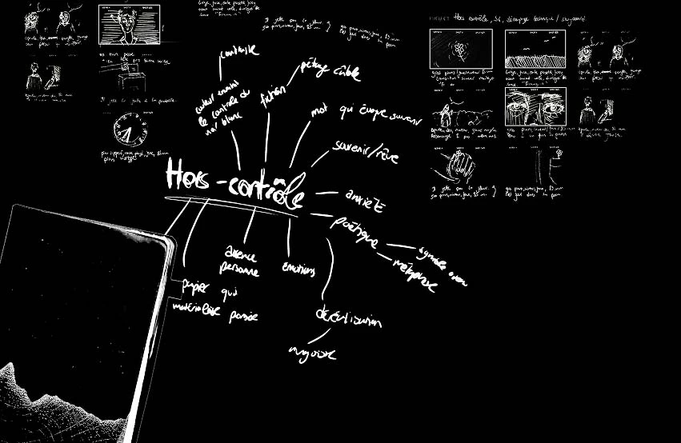
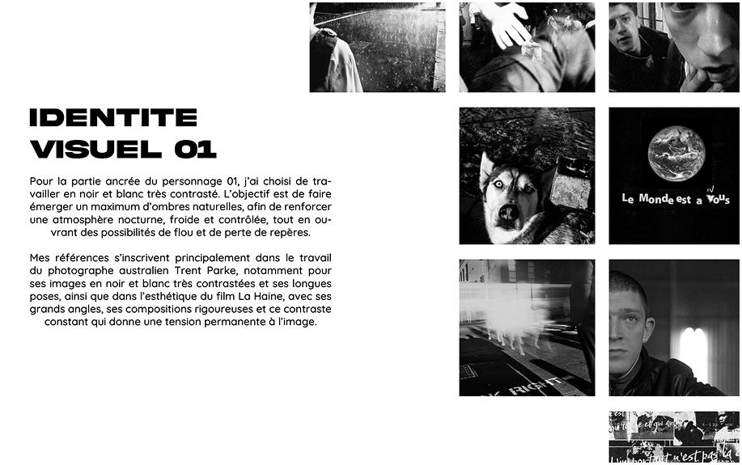
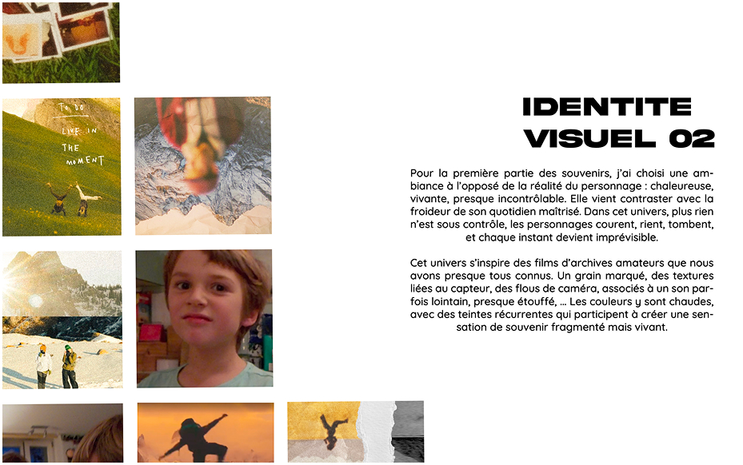
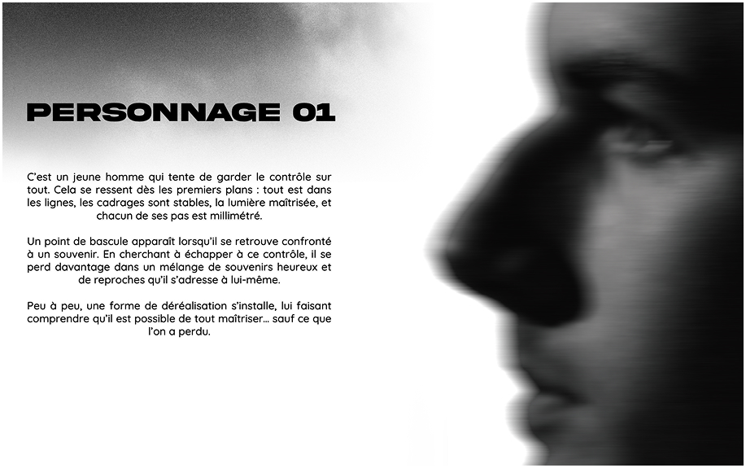
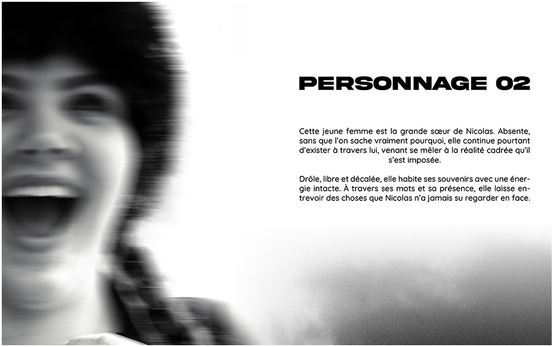
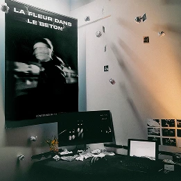
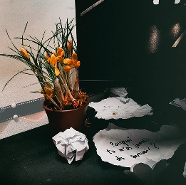
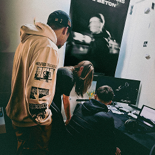
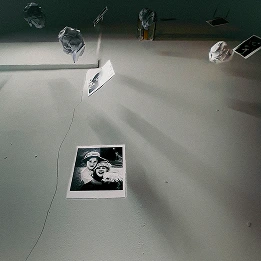
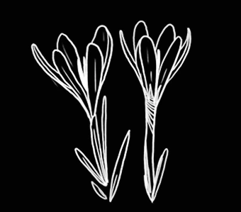

Dans le cadre de ma troisième année à eikon, le « S6 » est un
projet réalisé de manière autonome pendant deux mois, autour d’un
mot-clé. Cette année, la thématique était : « Hors contrôle ».
J’ai choisi de représenter la perte de contrôle liée à une
absence. Peu à peu, cette absence laisse place aux pensées, aux
souvenirs et aux angoisses, jusqu’à rendre la réalité
insaisissable.

dossier preprod.




tournage




“On peut tout contrôler,
sauf ce qu’on a perdue.”
